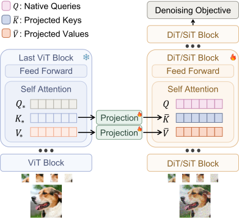
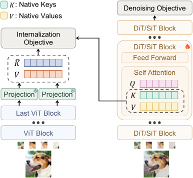
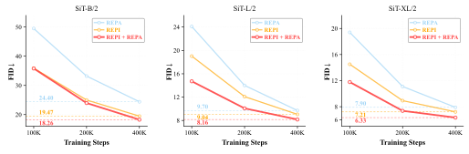
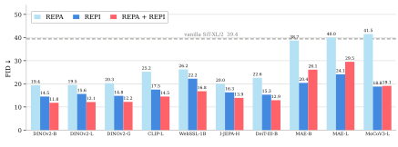
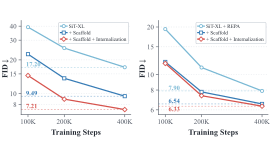

Complementary to REPA
At 100K steps, combining REPI with REPA achieves an FID of 11.78, outperforming REPI (14.51) and REPA (19.40) alone.
1 Sun Yat-sen University2 Video Rebirth3 The Hong Kong Polytechnic University
At 100K steps, combining REPI with REPA achieves an FID of 11.78, outperforming REPI (14.51) and REPA (19.40) alone.
REPI + REPA reaches an FID of 8.22 in just 160K training steps, matching vanilla SiT trained for 7M steps (FID 8.30), a speedup of over 43.5×.
The encoder and projection layers are used only during training and are fully discarded at inference, leaving the original backbone unchanged and incurring zero additional inference cost.
Recent representation alignment (REPA) methods accelerate diffusion transformer training by aligning projections of the transformer's hidden states with representations from pretrained visual encoders. In this work, we explore a reverse and complementary direction to REPA: rather than projecting diffusion representations into the encoder's space, we inject encoder representations into the diffusion transformer, allowing them to actively participate in the denoising process. To this end, we introduce REPresentation Injection (REPI), a training framework based on a scaffold-to-internalization strategy, in which projected encoder representations initially serve as a temporary scaffold and are then progressively internalized by the diffusion transformer. REPI not only outperforms REPA across a wide range of backbones but is also highly complementary to it, and combining the two yields substantial gains over either alone. Notably, with only 160K training steps, REPI + REPA surpasses vanilla SiT trained for 7M steps, a speedup of over 43.5×. Code is provided in the supplementary material and will be made publicly available.
Early training

Projected encoder keys and values temporarily replace the model’s native K/V. Native queries preserve the connection to the noisy input.
Subsequent training

The model resumes computing its own K/V. An internalization objective aligns these native representations with the projected encoder targets.
At inference, remove the visual encoder and projection layers. Sample with the original diffusion backbone.
REPI improves convergence across SiT model scales. Combining it with REPA yields further gains.

iREPA and REPI use the same initial noise and sampler, without classifier-free guidance.

Across visual encoders, diffusion backbones, and image resolutions.
REPI outperforms REPA across all ten evaluated encoders, including settings where REPA underperforms vanilla SiT. Combining the methods gives further gains for most encoders.


The temporary scaffold improves training even after removal. Adding the internalization objective further reduces FID.

@misc{fu2026scaffold,
title = {Scaffold Then Internalize: Representation Injection for Diffusion Transformers},
author = {Han Fu and Jiacheng Chen and Baoquan Zhao and Weidong Chen and Wei Liu and Li Qing and Xudong Mao},
year = {2026}
}